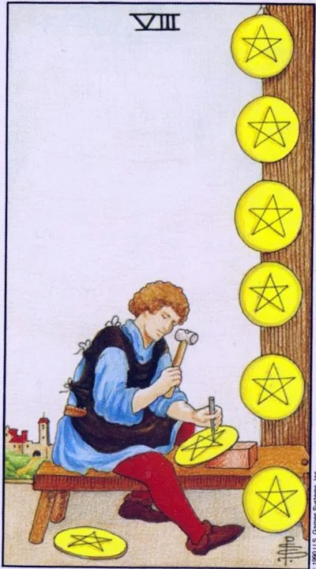

Minor Arcana · Pentacles
VIIIEight of Pentacles
School of Mastery: monotonous work polishes skill, and repetition is imperceptibly transformed into art.
Archetype and core meaning
The apprentice bent over the workbench and carves pentacles one by one: six ready-made ones hang on the wall, the seventh under the cutter, the eighth waiting in line. The head is busy with work, not dreams of fame; the city in the distance is the world that will one day need his craft. Eight pentacles is an apprenticeship card: skill is not born of a flash of talent, it accumulates by repetition.
One of the most honest deck cards is that it doesn't promise quick triumphs, but it guarantees results for the person who stays behind the workbench. The sun in Virgo illuminates the process -- the joy of precise movement. The work here is a form of life: each disc is slightly better than the previous one, and in that difference, a person grows up.
Daily life
The house benefits from the hands of routine: new recipes, paperwork, mastered repairs of trifles; language, driving, gardening; in a month of twenty minutes a day, you'll be surprised at the difference.
Work and career
The learning and grinding period: internship, training, portfolio. From the inside, progress seems boring, from the outside, visible, and appreciated by employers later and most expensive. Bring the tasks to the end: the reputation of the finisher is the capital of slow but steady growth.
Relationships
Relationships speak the language of small things: breakfast, texting in the afternoon, talking without a phone in your hands. Love is a craft: study your partner's reactions like a master learns material. Single people work on their readiness for intimacy, not waiting for chemistry: communication skills are built by the same repetition.
Health
The body responds to consistency: technique is more important than heavy weights, short daily exercise is a rare feat in the room, good time for rehabilitation, physical therapy, posture, listen to body signals before they become symptoms.
Spiritual meaning
The sun in Virgo is a spirit that polishes matter: a sacred craft where action is prayer with hands. Coins are mandalas, a repetitive form introduces meditation, labor becomes concentration practice. The card patronizes students of all schools: the first hundred mistakes are not failure, but payment for handwriting.
Failure in the workshop: whether the work is humiliated and falls out of hands, or idealism stifles the process itself - there is no mastery in both cases.
Archetype and core meaning
The workbench is cluttered: the apprentice is in a hurry and spoils the workpieces, then spends hours polishing one detail, afraid to show it to the world. The flipped eight is a frustrated craft: the effort has ceased to connect with the result. The work is "back off" when the hands are doing and the head is long gone; or perfectionism, in which no thing is declared finished.
The third is the dead end of monotony: the same coins are cut for years, although skill has long grown out of the task, and the root of all scenarios is the same: the connection between labor and meaning is broken, restore it by updating the approach or honestly admitting that you have already learned this workbench.
Daily life
Housework is done down the sleeves: half-tidying, cooking, the courses you buy are dusted in the third lesson, or vice versa, perfect house order eats up the evenings, and any deviation from the plan spoils the mood, and both sloppy and cult of perfection exhaust equally. Choose three things that do well, and let the rest go.
Work and career
Quality is falling: deadlines are running out, rush errors, a cracked reputation for a specialist, or endless reworking of a project because everything seems insufficient, sometimes it's a dead end position where there's nothing to grow: treated with a new approach to the current job or a new step - a course, a change of role.
Relationships
Relationships on autopilot: caring has become ritual without feeling, talking has become logistics, or the union is choked by the control of every little thing, connections need freshness — a new business together, a trip, an honest conversation about mutual boredom: the craft of love dies without apprenticeship.
Health
The training is done carelessly — the technique suffers, and instead of the benefit comes injury; or vice versa, the pursuit of perfect shape leads to overtraining, treatment is done irregularly or excessively diligently. The body now needs moderate accuracy: less arbitrariness, more adherence to proven patterns.
Spiritual meaning
A frustrated craft is power in a dirty channel: practices are careless, signs are misread, intentions miss the mark. Perfectionism is no less harmful than laziness - both keep the student in place. Back to basics: simple exercises done carefully restore connection faster than complex techniques.
🌿 How the school reads this rank
The main idea
The pleasure of working right, the coins here are the trace of a process that one enjoys.
How it manifests
In work, you have a master who loves his work and knows how to find a work pace; in money, you monetize what you love; in relationships, physical intimacy, where quality and rhythm matter; in development, work that gradually turns into meditation.
The shadow side
The wrong rhythm kills pleasure: either a boring routine appears, or a fixation on pleasure.
Keywords
Rhythm · skill · pleasure · work · intimacy
📜 In detail — from the rank lecture
Essence of the card
The person mints coins, but the focus of the card is not money, but the pleasure of the process; money is a nice pile at the end of the day.
Upright position
- Work: the candidate with this card really loves the job and will find the right pace. It took pleasure - pauses: smoke break, tea with colleagues; otherwise you work half a day, half a day you're exhausted.
- Finance: monetizing what you love (the school went from being a tarot to being a taro), and a joke about new Russians: a computer scientist brags that he's "still getting paid" -- a favorite thing is a reward in itself.
- Relationship: pentacles are the physical side; sex is the basis of relationships; right frequency plus quality is just to like; straight: sex is the main part of a relationship, the partner is focused on it; the foundation of a couple's development.
- Self-development: “working on the machine”, as grandmother knits – active meditation for the sake of the process itself; a toy with a man knocking a hammer.
Negative meaning
• wrong rhythm - "no joy, no high"; fixation on pleasure with forgetting spiritual; "work-work-work - as much as possible", boring from household worries. Vector: "life should be liked" - with pauses and sweetness (Ranevskaya: you can not eat meat, not smoke and not drink - "but the face will become very sad"; dessert on Fridays).
School emphases and distinctive points
- Works according to Waite (+ Manar deck – “it is good to consider the sexual aspects of relationships”); “78 doors do not work”; books like Sklyarova do not like – “too smart, they drown out the feelings of cards.”
- “Tarot is not a science, but a sensual experience, practically the art of prediction”; experience is hundreds or thousands of scenarios.
- Astrology of the system: eights - eighth house, Scorpio, moderation; roll call with arcana Moderation.
- Number series: two fours, four-legged animals, rhythm of the waltz; Slavic-household series: broom from a parable, grandmother knits, Friday dessert.
- Psychology – moderate ("psychologists may be offended"): analysis = swords; the main suit of the tarot is water, emotions.
- Cinema/cartoons: Livsey with chamomile (Treasure Island), stalactites and 2012, trendy Dune, the idea of the Velda review.
- Practice of layouts: the choice of an employee, the "card of the day" with the pentacle eight inverted, it depends on the context: "the same cards mean different things in different situations" (example: eight wands with the Empress).
Keywords
working rhythm; high from work; minting coins; sex as a base; sweetness of life.